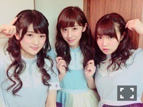
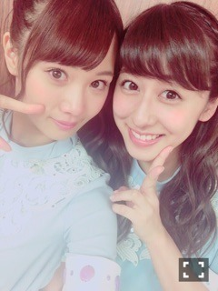
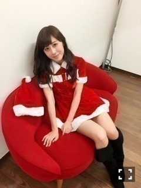

| 2015/12 19 Sat | 斎藤ちはる アンダーライブ武道 館！最高の時間。そ してせいらりん。(´ >∀<｀)ゝ |
ちはるーむへようこそ！♡
17日、18日は、
念願のアンダーライブin日本武道館でした！！
やっと、アンダーだけで武道館っていう夢が叶った...しかも2days...。
あの景色、あのサイリウム、あの空気...
絶対に忘れません。いや、忘れられません。
本当に最高の時間でした。
来てくれた皆さん、応援してくれた皆さん、本当にありがとう。

ひなちま、ひめたんと髪型がお揃いだったよー♡
気付いた人いたかなー？？
武道館では、ノンストップライブや自己紹介ダンスパート、全員センター企画など様々な企画をしました！
全員センターでは、2日目のトップバッターを飾らせていただきました( ;o; )♡！！
曲は「おいでシャンプー」！
初めてのセンター企画でドキドキだったけど、何よりものすごく楽しかった...♡
間奏では、いつもファンの方が「ナカダカナシカ」コールをやっているのを聞いていたので...
今日だけは！ぜひ！と思って、
「ちはるちゃんしか」コールをお願いしました(﹡ˆ ˆ﹡)
ちはるちゃんしか♪ちはるちゃんしか♪俺のちーはーるちゃんしか♪ちはるちゃんしか♪ちはるちゃんしか♪
本当は何も言わない予定だったんだけど、どうしてもみなさんの声が聞きたくって
スタッフさんやメンバー、そしてファンの皆さんにご協力いただきました！
本当にありがとうございました♡
あの瞬間、皆さんの声がひとつになった瞬間がとても気持ちよかったなあ\( ˆoˆ )/！
嬉しすぎて、にやけてたのばれてたかも...笑
本当に楽しかった！！！
素敵な企画。アンダーライブならではの企画。
全国ツアー(!?)も決定しました！
アンダーはもっともっと大きくなります！！
誰にも止められなくなるくらい、大きくなってぎゃふんと言わせる存在になります！！
誰もアンダーでいることに満足していません。
だからこそ、先があるからこそ、前へ進めるのです。
これからも応援よろしくお願いします！
そしてそして、1日目に大きな発表がありました。
せいらりんの卒業です。
噂でせいらりんが卒業しちゃうかもしれないっていう話を聞いたことがあったんだけど
そんなの嘘だって思ってたから...
実際にせいらりん自分の口から卒業の言葉を聞いて本当にびっくりしました。
せいらりんはいつも明るくて元気で、
時にはみんなに喝を入れてくれて、
ライブのことを1番大事に考えてくれて...
自分よりも他人のことを気にしてくれる素敵な人です。
みんないつも、せいらりんの笑顔に、元気に救われているよ。ありがとう。
卒業発表した時のメンバーの号泣。
君の名は希望のときの、全面の黄色のサイリウム。
ライブが終わってもなお止まらない永さんコール。
イジリーさん始め、共演者やスタッフさんからの寂しいよ、の声。
どれだけの人がせいらりんを愛していたか。
それだけ素敵な人なんです。
せいらりんは夢に向かう覚悟ができている。
その背中を押していきたい。
だけどやっぱり側にいて欲しい。
寂しいよ......

らりんありがとう。
だけど卒業して終わりじゃないもんね！！
卒業してもご飯連れてってね。
卒業する前に中3組をご飯に連れてってね。
今日の口約束は忘れないぞー！笑
らりんだいすきだよー(﹡ˆ ˆ﹡)
よし！
まだまだ明日も明後日もクリスマスライブもあるし！！
気持ち切り替えて、頑張るぞ！！
おー！
気持ち切り替えるために(ただ食べたくてだけど...)
「マツコの知らない世界」に出ていたアイスマン福留さんのオススメアイスを食べました。
ビエネッタカップバージョン。美味しすぎた。カップになってもあのパリパリ感と濃厚さは変わらない...。今日2個目のアイス。隠れたアイス好き。
アイスマニア検定、受けてみようかな...( ◦˙ ˙◦ )

ちはるサンタです。ふふ
よーし！写真貼る箇所相変わらず下手だけど、気にしないぞー！おー！
よーし！クリライも頑張るぞ！おー！
ちはるーむめいとは、赤と青のサイリウムで...♡すぐ見つけるぞー！おー！
斎藤ちはる